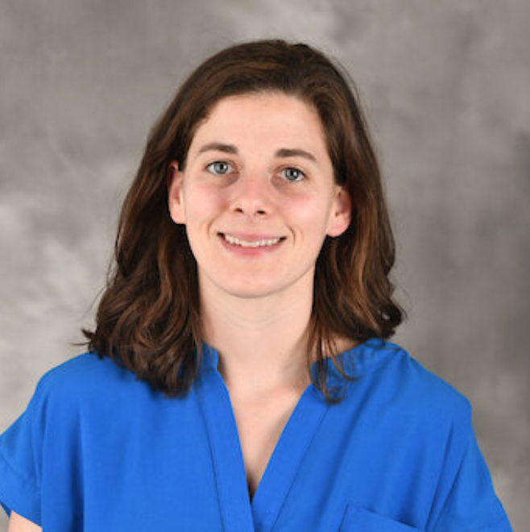

Click a card to read the full research description or filter by keyword below.
Anatomy, Paleontology, Evolution
Creative Thinking, Mentoring, AI
Neuroscience, Genetics, Zebrafish

Microbiology, Bacteriophage, AMR
Genetics, Evolution, Genomics
Please fill out the form below to apply for a research position.